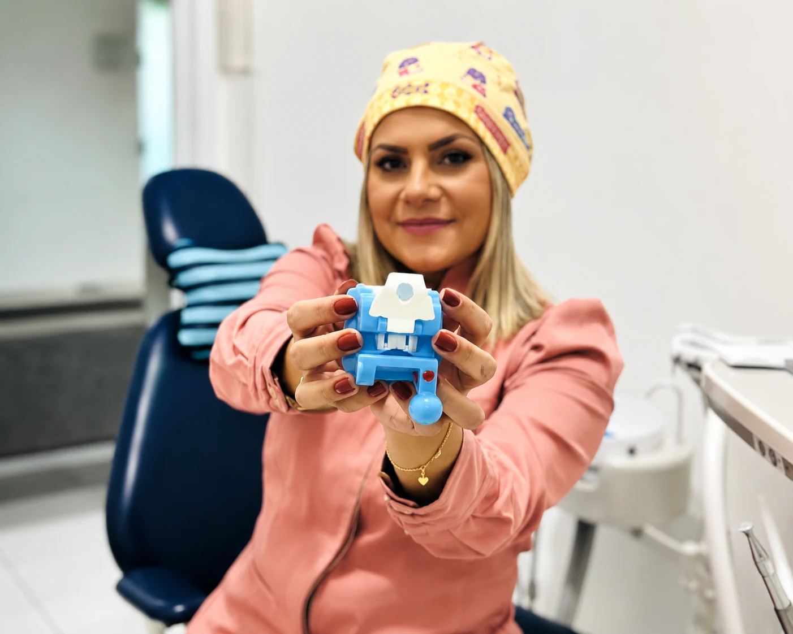

Estou com dor ou desconforto
Conte onde dói, há quanto tempo e se existe inchaço ou sensibilidade.
Quero avaliar minha dorAtendimento para prevenção, estética, dor de dente e reabilitação oral em um só lugar. A LaCari Odontologia fica perto de quem mora ou trabalha em Itaquera e região da Zona Leste.
Você não precisa saber o nome do tratamento. Escolha a situação mais próxima do que está sentindo e converse com a equipe.
Conte onde dói, há quanto tempo e se existe inchaço ou sensibilidade.
Quero avaliar minha dorConverse sobre cor, formato, alinhamento ou outro aspecto que incomoda você.
Quero avaliar meu sorrisoReceba orientação sobre avaliação, restauração e possibilidades de reabilitação.
Quero conhecer as opçõesOrganize limpeza, prevenção e acompanhamento antes que apareça uma urgência.
Quero cuidar da prevençãoExperiências compartilhadas publicamente por pacientes no perfil da clínica no Google.
★★★★★“Ótima estrutura e profissionais, recomendo.”
★★★★★“Ótimo atendimento.”
★★★★★“Excelente atendimento e profissionalismo!”
Avaliações selecionadas pelo Google por relevância. O Google verifica e pode remover conteúdo que viole suas políticas de conteúdo.
A avaliação ajuda a transformar dúvidas e sintomas em prioridades claras, sem promessas de resultado antes do exame clínico.
A equipe escuta sua queixa, seu objetivo e informações importantes sobre sua saúde bucal.
A dentista avalia dentes e gengiva e orienta sobre exames quando forem necessários.
Você recebe explicações sobre os próximos passos e pode tirar dúvidas antes de decidir.
Da consulta de rotina aos tratamentos estéticos, você encontra orientação clara e um plano pensado para o seu caso.

Opções seguras para deixar o sorriso mais claro com acompanhamento profissional.
Saiba mais sobre clareamento em ItaqueraCorreção do alinhamento dos dentes e da mordida com planejamento individual.
Saiba mais sobre aparelho em ItaqueraCuidado para aliviar a dor, tratar infecções e preservar dentes sempre que possível.
Saiba mais sobre canal em ItaqueraMelhora de cor, formato e proporção dos dentes com resultado natural.
Reabilitação para quem perdeu um ou mais dentes e quer voltar a mastigar com confiança.
Saiba mais sobre implante em ItaqueraSoluções personalizadas para recuperar função, conforto e estética.
Limpezas, restaurações e prevenção para manter sua saúde bucal em dia.
Conteúdos educativos ajudam pacientes de Itaquera a entender sinais de alerta, opções de tratamento e quando agendar uma avaliação odontológica.
Clareamento dói? Quanto dura um implante? Como saber se preciso de canal? Veja respostas no blog.
O tratamento começa com escuta. Antes de indicar qualquer procedimento, a equipe entende sua queixa, suas expectativas e o que cabe na sua rotina.
Você entende o diagnóstico, as prioridades e as etapas do tratamento.
Urgência, saúde e estética são organizadas para facilitar sua decisão.
Agendamento e dúvidas pelo WhatsApp para tornar o cuidado mais simples.
Estar perto faz diferença quando o tratamento exige retorno, manutenção ou acompanhamento. A LaCari fica na Avenida Pires do Rio, no Jardim Norma, e recebe pacientes de Itaquera e de outros bairros da Zona Leste em um único endereço.
Você pode procurar a clínica para avaliação de rotina, limpeza, restaurações, dor de dente, clareamento, aparelho, facetas, implantes, próteses e acompanhamento preventivo. Na primeira consulta, a equipe identifica prioridades e explica as possibilidades de tratamento de acordo com cada caso.
Veja a Dra. Tamara e os ambientes reais da Clínica LaCari Odontologia, em Itaquera.
Acompanhe os conteúdos públicos do perfil oficial da clínica, com dicas e novidades para cuidar melhor do seu sorriso.
Abrir @clinicalacariConte o que você precisa e receba orientação para marcar sua avaliação.